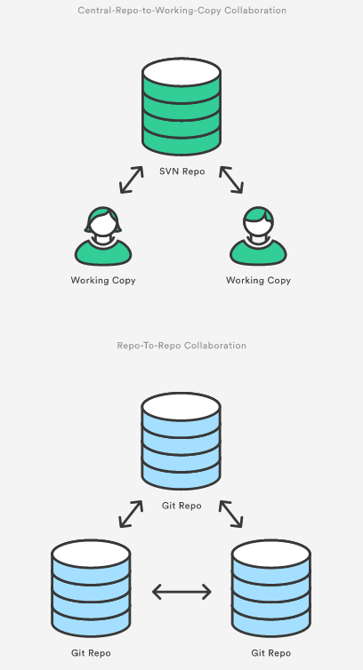

[译]git clone
git clone
git clone命令copy一个已经存在的Git仓储. git clone有点像svn的checkout, 他的不同之处是这个copy也是一个完整的仓储－它有自己的历史纪录, 能管理自己的文件.
clone自动创建了一个叫origin的远端连结指向原始的仓储. 这样就能很容易的和中心仓储进行交互.
用法
git clone <repo>
从<repo>这个位置clone一个仓储到本机. 这个原始仓储可以是本地的文件系统或者是远程机器（可通过http或ssh进入）.
git clone <repo> <directory>
从<repo>这个位置clone一个仓储到本机的<directory>文件夹下.
讨论
如果一个项目已经被设置在一个中心仓储里面了, git clone命令是用户获得一个开发copy的最通常的方法. 和git init一样, git clone通常也执行一次--一旦开发者获得了一个copy, 所有的版本控制操作和协作都能通过他本地的仓储进行管理.
Repo-To-Repo的协作
非常重要的是, Git的working copy和从一个SVN仓储中checkout得到的working copy非常不一样. 和SVN不同的是Git的working copy和中心仓储没什么区别, 他们都是一个拥有同样功能的仓储.
因此Git的协作和SVN也非常不同. SVN依赖于中心仓储和working copy之间的关系, Git的协作模式是repostitory-to-repository交互. push和pull的两头都是仓储.

例子
下面的例子演示了如何从一个服务器上的中心仓储中获取一个本地copy.
git clone ssh://john@example.com/path/to/my-project.git cd my-project # Start working on the project
第一行命令初始化了一个Git仓储在本地my-project这个文件夹. 然后cd到my-project文件夹下面开始编辑文件, commit, 和其他仓储进行交互.
注意了我们本地的文件夹不是my-project.git而是my-project, .git被自动忽略了. 这意味着我们本地这个copy是非bare仓储.